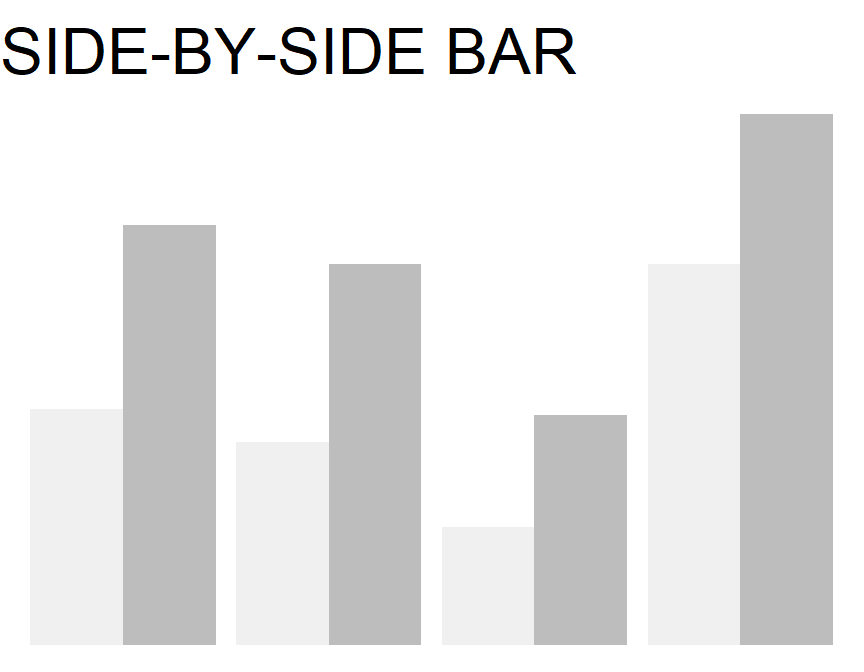
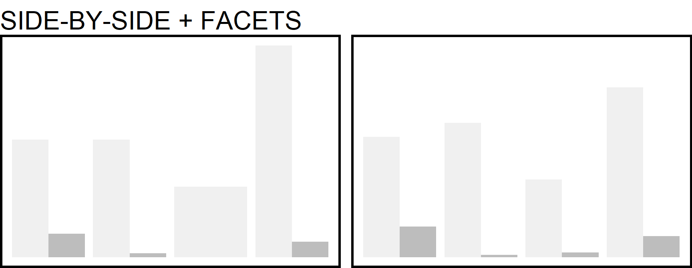
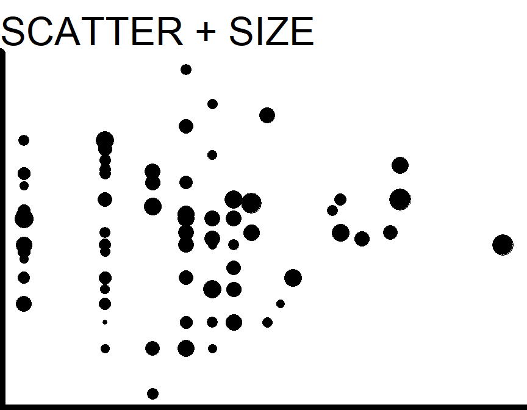
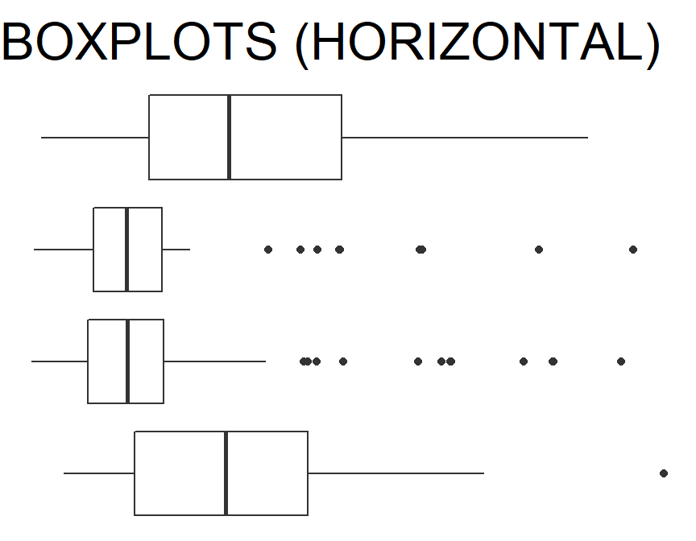
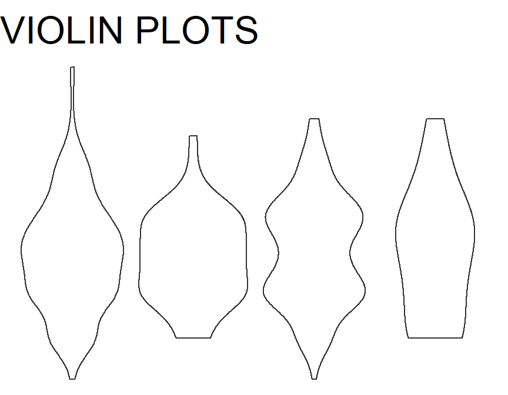
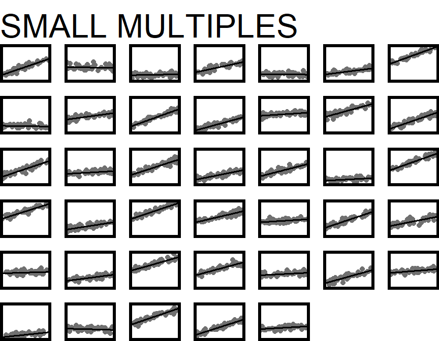

–>
Motivation: Imagine First!
Figures are a crucial tool for exploring your data and communicating what you learn from the data.
Whether you are doing a quick check to assess basic features of a dataset or creating a key figure for an important presentation, the best practice is to work thoughtfully. You already learned about creating graphics by I.C.E.E:
The I.C.E.E. method:
- Imagine how you want your graph to look, before you
- Code. Once you have the basic starting point,
- Evaluate your work, and
- Elaborate (refine it).
Repeat until the figure is as awesome as it needs to be.
Limiting Your Imagination
There is really no limit to the creative data visualizations you might dream up.
But there is a set of basic, workhorse graphics that statisticians and data scientists use most frequently. What are the common options and how do you choose among them?
The best choice depends on what kind of data you have, and also on what you want to do with it: what question are your trying to answer? What story will you tell?
Learning Objectives
This tutorial will give you tools to:
- Choose an appropriate visualization for the data you have and the question you are trying to answer.
- Graph data with integrity, avoiding misleading design choices
- Tell the right story, including elements that emphasize your main finding and make your figure easy to interpret at a glance
Specifically, you will now focus on choosing the right type of visualization for the task at hand.
Note that the graphs shown in this tutorial are over-simplified versions - icons, really - with missing labels, huge titles, and huge data elements. This is intentional, to evoke the look of each plot type rather than to present actual data.
Variable Types
Before designing a graphic, you need some data. Ideally, it will be in a tidy table, with one row per case and one column per variable.
Different plots may be appropriate, depending on whether the variable is:
- Categorical (either nominal or ordinal) or
- Quantitative (interval or ratio)
- Note: Variables that take on discrete numeric values can be treated as either, depending mainly on whether there are a lot of possible values (treat like numeric) or few (treat like categorical)
For a review of variable types, check out the 3-minute, optional video before you continue.
Distributions
Sometimes, you need a plot that lets you see the distribution of a single variable:
- What values does it take on?
- How often does each value occur?
Sometimes these graphs present the answer to a scientific question of interest, but often they are used during exploration or model assessment to better understand a dataset and:
- Check the data
- Are there lots of missing values?
- Are missing values encoded as 999 or -1000 or some other impossible value instead of being marked as “NA”?
- Verify whether the variable’s distribution matches expectations (for example, approximate normality or unimodality)
Gallery: One Categorical Variable
To show one categorical variable, you might use bar, lollipop/Cleveland dot plots, or pie graphs.
| Graph | Show Proportions? | Show Counts? | Statisticians |
|---|---|---|---|
| Bar | ✅ | ✅ | üòç |
| Lollipop | ✅ | ✅ | üòé |
| Cleveland Dot | ✅ | ✅ | üòé |
| Pie | ✅ | ❌ | üò° |
.
- Can show either counts, proportions, or percentages
- Easy to see which categories have more/fewer observations
.
- Main difference is whether the “sticks” are drawn (Lollipop) or not (Cleveland Dot)
- Much like a bar chart, but using dots or lollipops to mark the count or proportion in each category
- Work well when there are many categories to be ranked by frequency
.
- Display proportions, not counts
- Unpopular with many statisticians and data scientists because…
- Hard to see which categories have more/fewer observation when proportions similar
- Temptation to clutter them up with annotation (for example, percentage for each slice)
- Can be inefficient use of space on rectangular page
- Often easier to interpret when there are few categories
Gallery: One Quantitative Variable
.
- Intuitive representation: x-axis shows range of variable values, and dots are data points
- As the idea is to show one dot per observation, may not work well for huge datasets
.
- Range of variable values is divided into bins, then height of each bar corresponds to the number of observations in the bin
- Effective way to examine the shape of a distribution
- Choosing the number of bins to use is tricky: too many, and the shape is jagged; too few over-smooths (peaks blend together). Not sure? Find a number of bins that is definitely too few, and one that is definitely too many, and then try to settle on an in-between value that best shows the real shape of the distribution without over-smoothing.
.
- Like a smoothed version of a histogram (obtained by kernel density estimation, if you want to look up mathematical details)
- Caution: for small datasets, the density plot may show “peaks” that really correspond to one or a few observations
- Can only show density (relative frequency of observation), not counts
.
- “Q-Q Plot” is short for “Quantile-Quantile Plot”
- In some cases, we want to examine the shape of a variable’s distribution to see if it matches a theoretical expectation. For example: do the regression residuals match a normal distribution? (If that example doesn’t make sense to you now - it will later in the course, don’t worry.)
- Quantile-quantile plots are one way to make this comparison. They plot the quantiles of the data as a function of the same quantiles of the expected theoretical distribution; if there’s a good match, the points should follow a line with slope = 1.
- How close to the straight line is “close enough”? That’s the tricky part…
Check Your Understanding: One-variable plots
Relationships
Very often, we want to examine relationships between variables, not individual variables’ distributions. This means thinking carefully about what types of variables are in the (potential) relationship, and how we can best show their values graphically.
Gallery: 2-3 Cat.

- One set of bars per “category”, colored by “groups” – shows two categorical variables at once
- Good for showing counts in each combination of categories/groups
- It is hard to compare proportion in each group across categories, if the total number in each category differs.
.
- Similar to side-by-side bar
- Compared to side-by-side, it’s harder to compare proportions in each group within a category, but easier to estimate the proportion in each category.
.
- One plot box – usually called a “panel” or “facet” – for each of a set of groups
- Think carefully about the question of interest and the relationship you want to highlight as you choose: should bar heights correspond to…
- Number of observations?
- Proportion of observations overall in the whole dataset?
- Proportion of observations in the panel?
- Something else?
Combinations (Stacked bars + Facets, etc.)
Of course, if you have 3 variables instead of just two, you can combine methods. Avoid it unless you are sure it is necessary and communicates clearly.
- Be sure that the resulting graph is not too complex to understand quickly, at a glance. Packing too much information into one graph sometimes means none of the info is actually communicated!
- And if showing proportions or percentages in such a display, be sure you understand what denominator is being used in the calculations – is it the fraction of the whole dataset, within facets, etc.?

Gallery: 2-3 Quant.
- A scatterplot is the default for visualizing the relationship between two quantitative variables
- Be sure you actually have two quantitative variables! If not, another plot may be a better option
.
- If the x-axis variable is Time (or it otherwise makes sense to join the dots), a line can replace the dots, or be added to them
- Make sure connecting the dots makes sense in context and does not guide the eye to incorrect interpretations (for example, emphasizing outliers)
Adding More Quant. Variables
What if you have three or four quantitative variables whose relationships you’re curious about?
Proceed with caution!
It’s possible to include 3+ variables on one plot, but ideally it should still be interpretable at a glance:
- What is the main point of the figure? Is it possible to make the point without showing all 3+ variables together?
- Keep things as simple as you can while still telling the story you want to tell.
.

- You can adjust the size of each dot in a scatter plot to correspond to the value of a third variable
- This is especially useful when the third variable measures the size of the population being represented – for example, a scatter plot of life expectancy vs income for many countries, with point size indicating population of each country
Gallery: Mixed Quant. + Cat.
There are several plots designed specifically to look at the distribution of a quantitative variable, grouped by a categorical variable.
.

- The boxplot shows a summary of the distribution. The box spans the middle half of the data, with the line marking the median. The “whisker” lines extend to cover the range of “most of” the data, with outliers shown individually
- For details, check out this great explanation of how boxplots are constructed from Introduction to Modern Statistics by Mine Çetinkaya-Rundel and Johanna Hardin.
- If your dataset is too small to estimate the median and quartiles of the data accurately, consider showing all the observations (for example, using or overlaying a jitter plot)
.

- These show a mirrored density plot for each group
- As for density plots, make sure you have a large enough dataset so that the bumps in the density curve don’t represent just one or a couple of observations
Facets?
You can also consider making multi-panel plots with one histogram, density plot, or dotplot per facet, but comparing between facets is usually harder than comparing boxplots or violin plots on a single axis.
Check Your Understanding: Quant. + Cat.
There are some errors and inconsistencies in the chart below!

chart choice infographic
Infographic from activewizards.com
Gallery: 3+ Quant. + Cat.
What if you want to show how three or more variables interact, with a mix of quantitative and categorical data? Surprisingly, this can often be done well. Color and Facets to the rescue!
.
- Coloring the points in a scatter plot by a categorical variable is especially useful if the trend varies by category
- Adding trend lines for each category can guide the eye, which may be helpful (if a real linear trend exists)
- Shape can be used as well as color
- To reinforce groups (redundant coding - useful for color-blind viewers and in case the figure is copied in black-and-white)
- To represent yet another variable (be careful that the result is still interpretable at a glance)
- You can also color by quantitative variables, but it’s less often useful
.
- If you have many groups, it may be clearer to have one facet for each group
- Standard practice is to keep axis limits the same for all facets.
- If you break this “fixed scales” rule of thumb, be sure you have a compelling reason, because the viewer will often assume scales are the same: making them different can lead to misinterpretation
.

- Taking this to an extreme, you can use a “small multiples” plot with many facets. In this case the scales should definitely be fixed, since their labels will be left out or too small to read.
- Small multiples can work well to compare trends over time (one facet per time period) or across many groups
Animation
For presentation and web graphics (but not printed material), animation can be used to show how a trend changes over time (or as some other third variable changes).
Ensure the animation emphasizes the story you want to tell, rather than providing a flashy distraction from it.
Check Your Understanding: Multi-variable plots
 Chart from: https://coronavirus.jhu.edu/data/new-cases-50-states on August 25, 2020
Chart from: https://coronavirus.jhu.edu/data/new-cases-50-states on August 25, 2020
Gallery: Uncertainty
Statisticians are obsessed with measuring, understanding, and communicating uncertainty. How sure are we that the trend or pattern or proportion indicated in a graph matches up with the real-word, overall truth about the situation?
And how can we show how sure we are, on the graph?
- Error bars span a range of reasonable values for a point estimate (like a proportion, mean, etc.) so they often appear on points or bars
- Error bars are commonly sized to show 1 standard error, or a 95% confidence interval (CI). We will usually choose a 95% confidence interval, which covers the zone where the truth likely is.
- Error bars that overlap don’t always mean there is no real difference
.
- Error bands or ribbons also span 95% confidence intervals (or another selected width), but for all points along a line rather than a set of point estimates
- They can be used on straight lines or curves
- Usually, the band is a uniform grey, although sometimes the color is darker near the line and fades into the background at the edge of the confidence band to indicate that values closer to the line are more likely
.
- Often it is possible to simulate the process that generated the data being plotted, including uncertainty.
- An alternative to confidence bars/bands is to generate many simulated replicates (here, grey; color should fade into the background) and plot them along with the original (here, black; color should pop out).
- Each simulated replicate is an equally-likely “might have been” version of the observed result; showing hundreds or thousands of them gives a sense of the range of possibilities
Awesome Infographic
The Financial Times provides an excellent infographic summarizing the information you just reviewed (and more plot types besides).

FT Visual Vocabulary Infographic
Take a moment to view the FT Visual Vocabulary Infographic online – maybe even bookmark or download it! While we won’t explicitly cover every type they show in our course, they can all be produced in R.
Book Resource
For yet another perspective on this material, consider reviewing Chapter 5: “Directory of Visualizations”, from Claus Wilke’s Fundamentals of Data Visualization.
Reading the chapter is optional; consider bookmarking the e-book as reference material for the future, too.